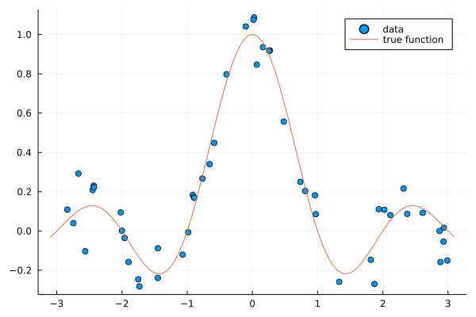
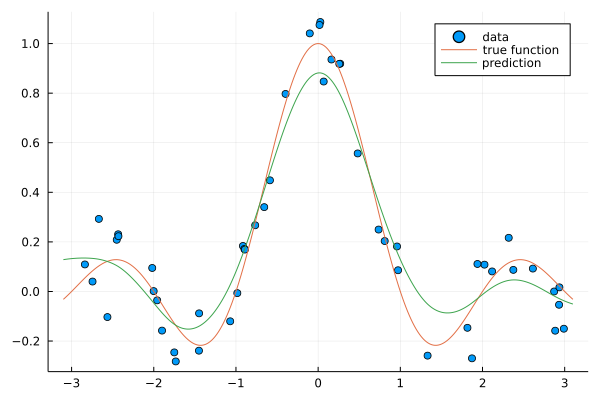
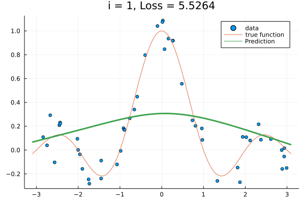

Train Kernel Parameters

You are seeing the HTML output generated by Documenter.jl and Literate.jl from the Julia source file. The corresponding notebook can be viewed in nbviewer.
In this example we show a few ways to perform regression on a kernel from KernelFunctions.jl.
We load KernelFunctions and some other packages
using KernelFunctions
using LinearAlgebra
using Distributions
using Plots;
using BenchmarkTools
using Flux
using Flux: Optimise
using Zygote
using Random: seed!
seed!(42);Data Generation
We generated data in 1 dimension
xmin = -3;
xmax = 3; # Bounds of the data
N = 50 # Number of samples
x_train = rand(Uniform(xmin, xmax), N) # We sample 100 random samples
σ = 0.1
y_train = sinc.(x_train) + randn(N) * σ # We create a function and add some noise
x_test = range(xmin - 0.1, xmax + 0.1; length=300)Plot the data
scatter(x_train, y_train; lab="data")
plot!(x_test, sinc; lab="true function")
Base Approach
The first option is to rebuild the parametrized kernel from a vector of parameters in each evaluation of the cost fuction. This is similar to the approach taken in Stheno.jl.
To train the kernel parameters via ForwardDiff.jl we need to create a function creating a kernel from an array. A simple way to ensure that the kernel parameters are positive is to optimize over the logarithm of the parameters.
function kernelcall(θ)
return (exp(θ[1]) * SqExponentialKernel() + exp(θ[2]) * Matern32Kernel()) ∘
ScaleTransform(exp(θ[3]))
endFrom theory we know the prediction for a test set x given the kernel parameters and normalization constant
function f(x, x_train, y_train, θ)
k = kernelcall(θ[1:3])
return kernelmatrix(k, x, x_train) *
((kernelmatrix(k, x_train) + exp(θ[4]) * I) \ y_train)
endWe look how the prediction looks like with starting parameters [1.0, 1.0, 1.0, 1.0] we get :
ŷ = f(x_test, x_train, y_train, log.(ones(4)))
scatter(x_train, y_train; lab="data")
plot!(x_test, sinc; lab="true function")
plot!(x_test, ŷ; lab="prediction")
We define the loss based on the L2 norm both for the loss and the regularization
function loss(θ)
ŷ = f(x_train, x_train, y_train, θ)
return sum(abs2, y_train - ŷ) + exp(θ[4]) * norm(ŷ)
endTraining
Setting an initial value and initializing the optimizer:
θ = log.([1.1, 0.1, 0.01, 0.001]) # Initial vector
opt = Optimise.ADAGrad(0.5)The loss with our starting point:
loss(θ)6.826611997832667Computational cost for one step
@benchmark let θt = θ[:], optt = Optimise.ADAGrad(0.5)
grads = only((Zygote.gradient(loss, θt)))
Optimise.update!(optt, θt, grads)
endBenchmarkTools.Trial: 2901 samples with 1 evaluation.
Range (min … max): 1.273 ms … 9.446 ms ┊ GC (min … max): 0.00% … 71.33%
Time (median): 1.588 ms ┊ GC (median): 0.00%
Time (mean ± σ): 1.716 ms ± 974.012 μs ┊ GC (mean ± σ): 7.87% ± 11.17%
▁█▃
▄███▃▂▂▂▂▂▂▁▁▁▁▁▁▁▂▁▁▁▁▁▁▁▁▁▁▁▁▁▁▁▁▁▁▁▁▁▁▁▁▁▁▁▁▁▁▁▁▁▁▁▁▂▂▂▂ ▂
1.27 ms Histogram: frequency by time 8.44 ms <
Memory estimate: 1.96 MiB, allocs estimate: 1971.Optimizing
anim = Animation()
for i in 1:25
grads = only((Zygote.gradient(loss, θ)))
Optimise.update!(opt, θ, grads)
scatter(
x_train, y_train; lab="data", title="i = $(i), Loss = $(round(loss(θ), digits = 4))"
)
plot!(x_test, sinc; lab="true function")
plot!(x_test, f(x_test, x_train, y_train, θ); lab="Prediction", lw=3.0)
frame(anim)
end
gif(anim, "train-kernel-param.gif"; show_msg=false, fps=15);
Final loss
loss(θ)0.3115230878633516Using ParameterHandling.jl
Alternatively, we can use the ParameterHandling.jl package to handle the requirement that all kernel parameters should be positive.
using ParameterHandling
raw_initial_θ = (
k1=positive(1.1), k2=positive(0.1), k3=positive(0.01), noise_var=positive(0.001)
)
flat_θ, unflatten = ParameterHandling.value_flatten(raw_initial_θ)
function kernelcall(θ)
return (θ.k1 * SqExponentialKernel() + θ.k2 * Matern32Kernel()) ∘ ScaleTransform(θ.k3)
end
function f(x, x_train, y_train, θ)
k = kernelcall(θ)
return kernelmatrix(k, x, x_train) *
((kernelmatrix(k, x_train) + θ.noise_var * I) \ y_train)
end
function loss(θ)
ŷ = f(x_train, x_train, y_train, θ)
return sum(abs2, y_train - ŷ) + θ.noise_var * norm(ŷ)
end
initial_θ = ParameterHandling.value(raw_initial_θ)The loss with our starting point :
(loss ∘ unflatten)(flat_θ)6.826611997832667Training the model
Cost per step
@benchmark let θt = flat_θ[:], optt = Optimise.ADAGrad(0.5)
grads = (Zygote.gradient(loss ∘ unflatten, θt))[1]
Optimise.update!(optt, θt, grads)
endBenchmarkTools.Trial: 2350 samples with 1 evaluation.
Range (min … max): 1.519 ms … 11.283 ms ┊ GC (min … max): 0.00% … 80.98%
Time (median): 1.909 ms ┊ GC (median): 0.00%
Time (mean ± σ): 2.119 ms ± 1.222 ms ┊ GC (mean ± σ): 7.52% ± 10.81%
▂▆█▅ ▂▁
████▅▃▅▇███▅▁▃▁▁▁▁▃▁▃▁▃▁▁▁▁▁▁▁▁▁▁▁▁▁▁▁▁▁▁▁▃▁▁▁▁▁▁▁▁▁▃▄▅▄▆▅ █
1.52 ms Histogram: log(frequency) by time 10.5 ms <
Memory estimate: 2.00 MiB, allocs estimate: 2739.Complete optimization
opt = Optimise.ADAGrad(0.5)
for i in 1:25
grads = (Zygote.gradient(loss ∘ unflatten, flat_θ))[1]
Optimise.update!(opt, flat_θ, grads)
endFinal loss
(loss ∘ unflatten)(flat_θ)0.3115268205943201Flux.destructure
If don't want to write an explicit function to construct the kernel, we can alternatively use the Flux.destructure function. Again, we need to ensure that the parameters are positive. Note that the exp function is now part of the loss function, instead of part of the kernel construction.
θ = [1.1, 0.1, 0.01, 0.001]
kernel = (θ[1] * SqExponentialKernel() + θ[2] * Matern32Kernel()) ∘ ScaleTransform(θ[3])
p, kernelc = Flux.destructure(kernel);This returns the trainable parameters of the kernel and a function to reconstruct the kernel.
kernelc(p)Sum of 2 kernels:
Squared Exponential Kernel (metric = Distances.Euclidean(0.0))
- σ² = 1.1
Matern 3/2 Kernel (metric = Distances.Euclidean(0.0))
- σ² = 0.1
- Scale Transform (s = 0.01)From theory we know the prediction for a test set x given the kernel parameters and normalization constant
function f(x, x_train, y_train, θ)
k = kernelc(θ[1:3])
return kernelmatrix(k, x, x_train) * ((kernelmatrix(k, x_train) + (θ[4]) * I) \ y_train)
endWe define the loss based on the L2 norm both for the loss and the regularization
function loss(θ)
ŷ = f(x_train, x_train, y_train, exp.(θ))
return sum(abs2, y_train - ŷ) + exp(θ[4]) * norm(ŷ)
endTraining the model
The loss with our starting point :
θ = log.([1.1, 0.1, 0.01, 0.001]) # Initial vector
loss(θ)6.826611997832667Initialize optimizer
opt = Optimise.ADAGrad(0.5)Cost for one step
@benchmark let θt = θ[:], optt = Optimise.ADAGrad(0.5)
grads = only((Zygote.gradient(loss, θt)))
Optimise.update!(optt, θt, grads)
endBenchmarkTools.Trial: 2710 samples with 1 evaluation.
Range (min … max): 1.368 ms … 10.717 ms ┊ GC (min … max): 0.00% … 74.80%
Time (median): 1.698 ms ┊ GC (median): 0.00%
Time (mean ± σ): 1.836 ms ± 1.062 ms ┊ GC (mean ± σ): 7.66% ± 10.80%
█
▃██▅▂▂▁▂▂▂▂▂▁▂▁▁▁▁▁▁▁▁▁▁▁▁▁▁▁▁▁▁▁▁▁▁▁▁▁▁▁▁▁▁▁▁▁▁▁▁▁▁▁▁▂▂▂▂ ▂
1.37 ms Histogram: frequency by time 9.57 ms <
Memory estimate: 1.96 MiB, allocs estimate: 2054.The optimization
for i in 1:25
grads = only((Zygote.gradient(loss, θ)))
Optimise.update!(opt, θ, grads)
endFinal loss
loss(θ)0.3115230878633516This page was generated using Literate.jl.